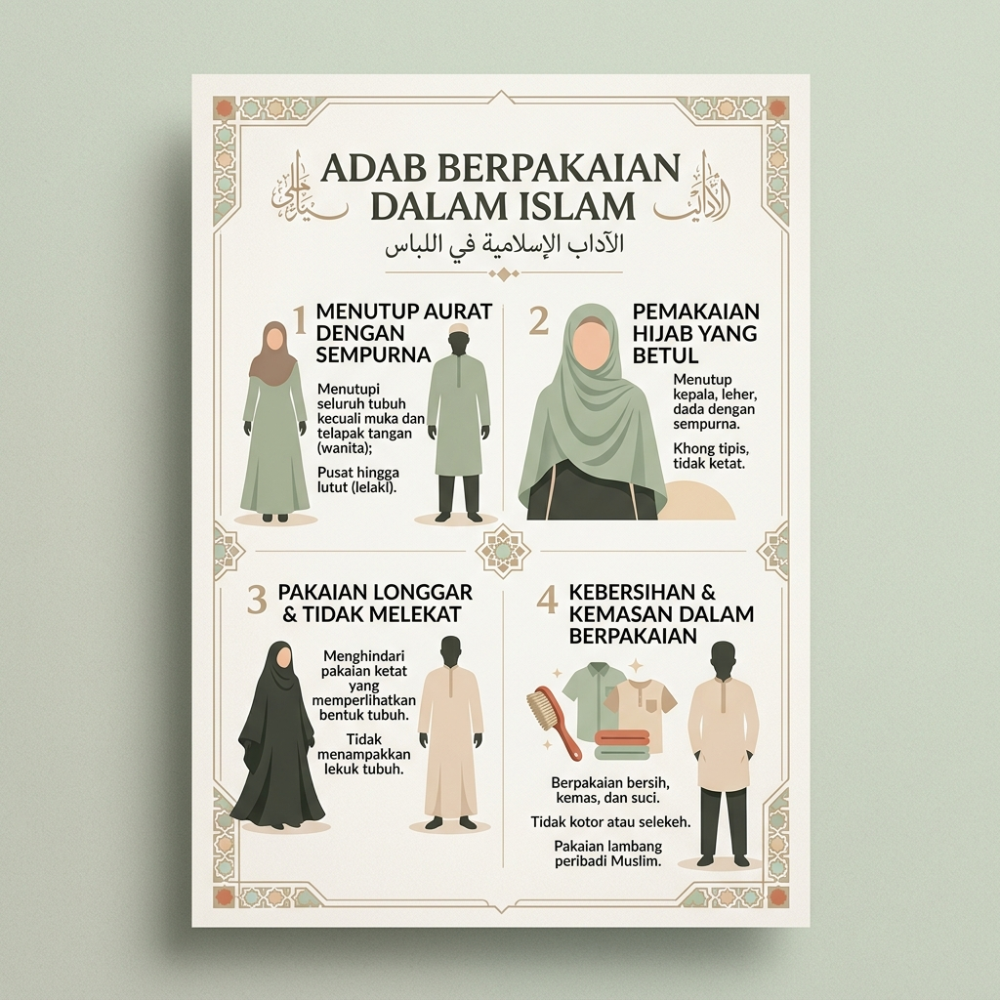

Panduan Etika Menutup Aurat Berdasarkan Al-Qur'an dan Sunnah Rasulullah ﷺ

Poster Infografis: Adab Berpakaian dalam Islam — Ilustrasi modern flat design.
Ditulis Oleh: Rian Hasannudin — Mahasiswa PAI 6, Universitas Pelita Bangsa, 2026
Islam mengajarkan bahwa pakaian bukan sekadar penutup tubuh, melainkan bentuk ketaatan kepada Allah SWT dan cerminan akhlak seorang Muslim. Berpakaian yang baik adalah bagian dari ibadah dan merupakan wujud syukur atas nikmat yang diberikan Allah.
Kewajiban utama berpakaian adalah menutup aurat. Bagi laki-laki dari pusar hingga lutut, dan bagi perempuan seluruh tubuh kecuali wajah dan telapak tangan.
Pakaian seorang Muslim harus bersih dari najis dan kotoran, karena kebersihan merupakan sebagian dari iman dan menjadi syarat sah dalam ibadah.
Berpakaian hendaknya sederhana, tidak bermewah-mewahan yang mengarah pada kesombongan (israf), namun tetap rapi dan sopan.
Rasulullah ﷺ melarang laki-laki menyerupai perempuan dan sebaliknya dalam hal berpakaian, menjaga fitrah dan identitas masing-masing.
Pakaian harus tebal dan tidak menerawang sehingga benar-benar menutup kulit dan bentuk tubuh dengan sempurna.
Pakaian yang dikenakan hendaknya longgar dan tidak ketat agar tidak memperlihatkan lekuk tubuh yang dapat menimbulkan fitnah.
Rasulullah ﷺ mengajarkan doa: "Alhamdulillahil-ladzi kasaani haadza wa razaqaniihi min ghairi haulin minni wa la quwwah" — Segala puji bagi Allah yang telah memberiku pakaian ini.
Sunnah Nabi ﷺ mengajarkan untuk memulai memakai pakaian dari sisi kanan terlebih dahulu, dan ketika melepas dimulai dari sisi kiri.
Rasulullah ﷺ melarang laki-laki memakai sutera murni dan emas sebagai perhiasan, karena keduanya diperuntukkan bagi perempuan di dunia.
Pakaian yang dikenakan dengan tujuan pamer, mencari popularitas, atau membanggakan diri termasuk dalam kategori yang dicela dalam Islam.
Rasulullah ﷺ bersabda bahwa Allah itu indah dan menyukai keindahan, sehingga penampilan yang rapi adalah bagian dari ibadah.
Isbal (menjulurkan pakaian di bawah mata kaki bagi laki-laki) karena kesombongan dilarang Nabi ﷺ, karena Allah tidak akan memandang orang yang menyeret pakaiannya karena sombong.
Pakaian yang menutup aurat melindungi kehormatan dan martabat diri sendiri maupun orang lain.
Berpakaian sopan membantu menjaga hubungan sosial tetap sehat dan terhindar dari godaan syaitan.
Pakaian takwa (libasut-taqwa) adalah yang terbaik, menunjukkan kepatuhan seorang hamba kepada Rabb-nya.
Busana Islami menjadi identitas kebanggaan yang membedakan seorang Muslim dan menunjukkan karakter mulianya.
Berpakaian dalam Islam bukan sekadar urusan mode atau tren, melainkan bagian dari ibadah dan ketaatan kepada Allah SWT. Setiap Muslim diwajibkan menutup aurat dengan pakaian yang bersih, sopan, longgar, tidak transparan, dan tidak menyerupai lawan jenis.
Dengan memahami dan mengamalkan adab berpakaian yang diajarkan Al-Qur'an dan Sunnah, seorang Muslim tidak hanya menjaga kehormatan dirinya, tetapi juga menjadi teladan kebaikan bagi lingkungan sekitarnya. Pakaian terbaik adalah libasut-taqwa (pakaian takwa), yang merupakan perhiasan hati yang memancar melalui akhlak mulia.
Wallahu a'lam bish-shawab.